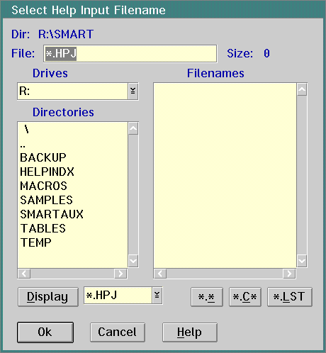

You can use either SMART or Hyperwise Lite to migrate Windows 32-bit help files to OS/2 help files. See the Hyperwise Lite documentation for information on using Hyperwise Lite to migrate help files.
Follow these steps use SMART to convert a Windows rich text format (RTF) file to an OS/2 help (IPF) file:
A sample HPJ file is:
..SMARTAUX\SAMPLE.HPJ
Choose the rest of the options as they apply. Generally, you will need to use most of the options. These are some of the options you might choose:
Note: The online help explains the error messages. To view the error message explanations, choose HELP from the Win Help Translator dialog panel. Then choose Win Help Translator Topics. After that, choose Win Help Translator Messages.
Please note that you must have the IPF compiler (IPFC.EXE) for SMART Win Help translation. Information Presentation Facility (IPF) is available from the IBM Developer's Toolkit.